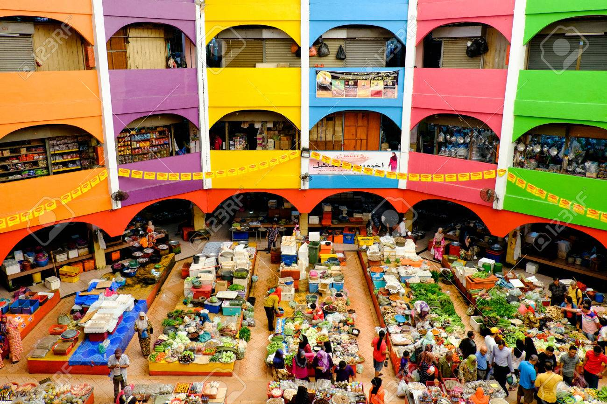
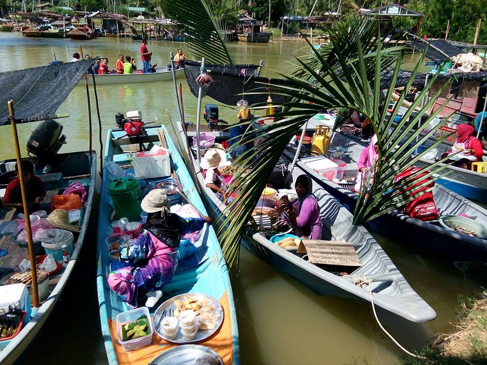
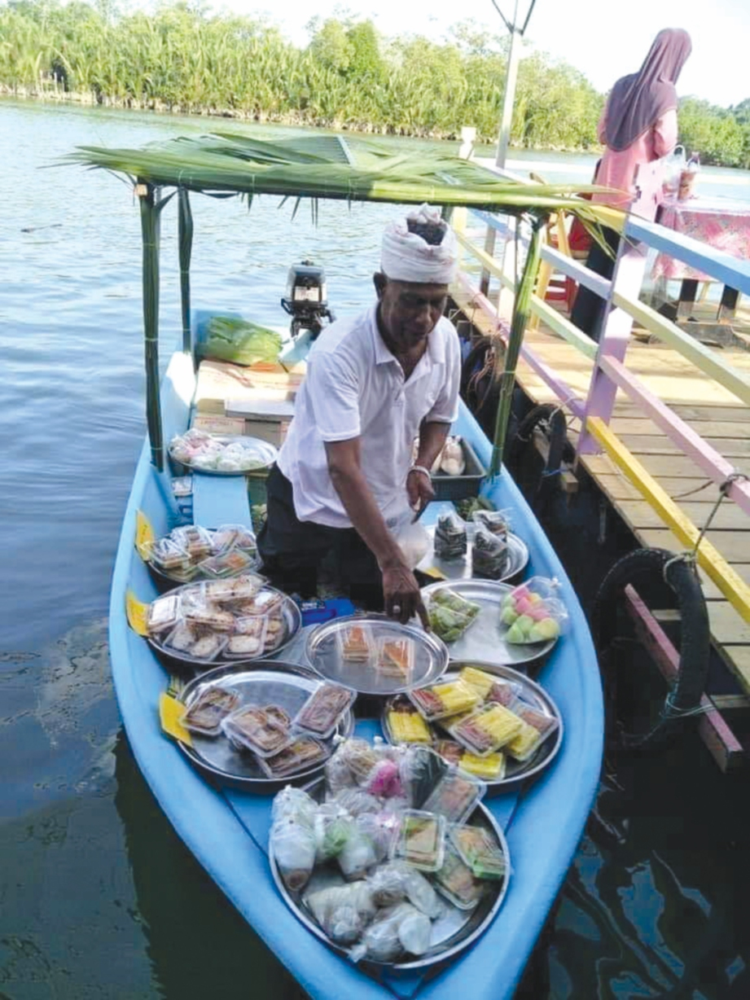
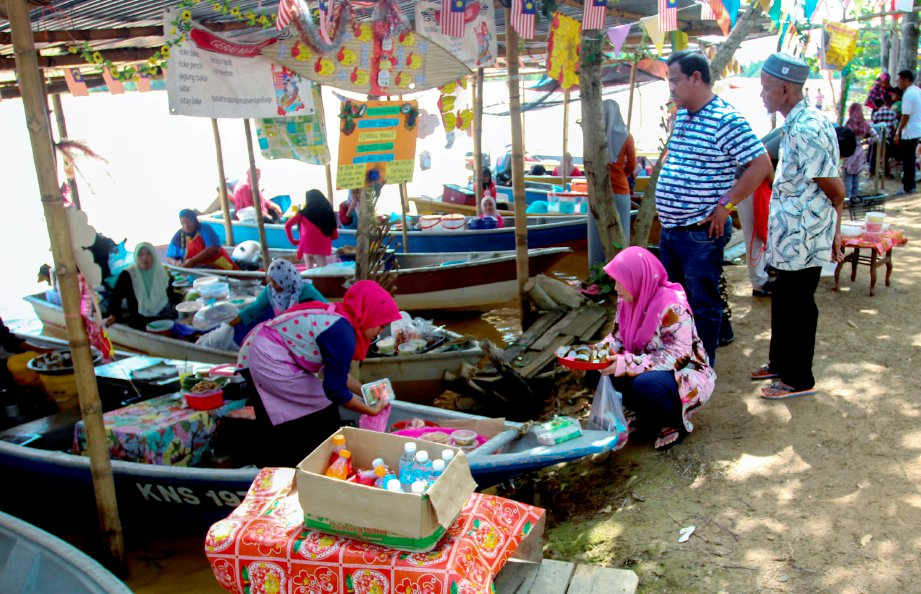
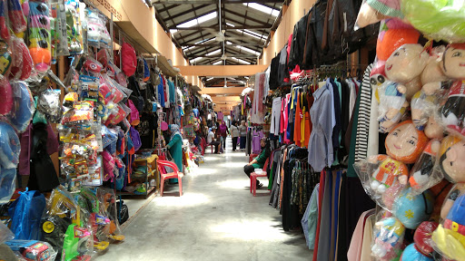
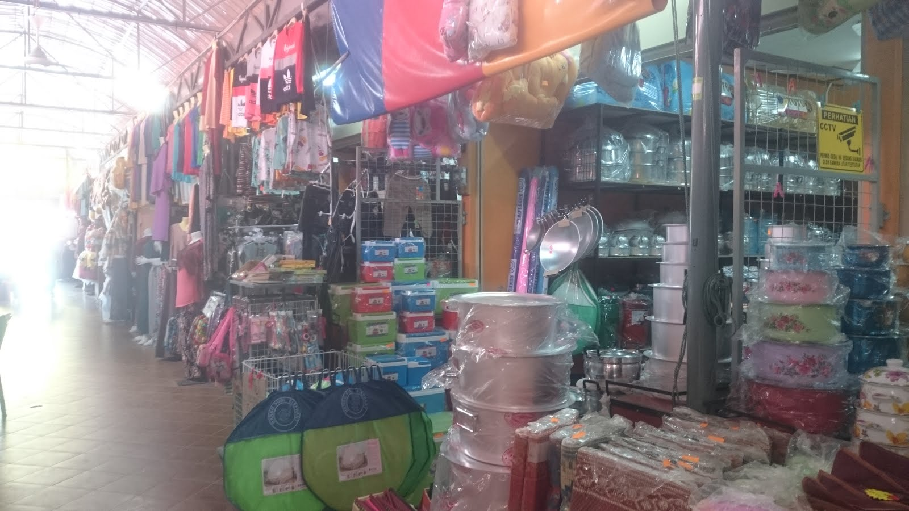
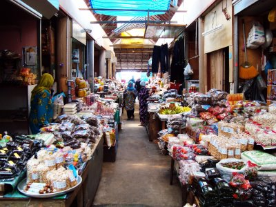
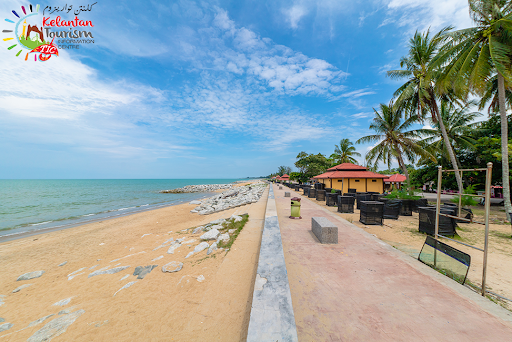
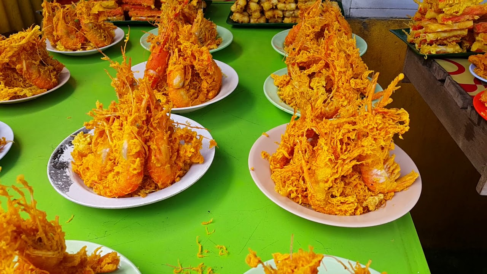
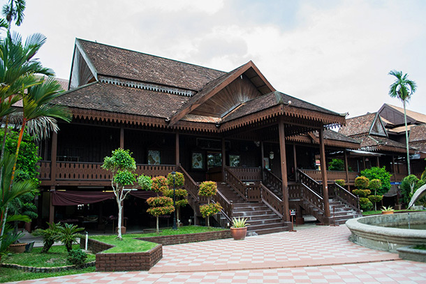

Kota Bharu might not be one of the most popular tourist spots in Malaysia, but it's worth to visit! The population of Kelantan is predominantly Malay and the state is often referred to as the 'Cradle of Malay Culture' which keeps traditions alive such as kite flying, wayang kulit, songket weaving, and batik design. One of the largest cities along Malaysia’s sleepier east coast, it’s perfect for a quick weekend getaway from the hustle and bustle of the city, or a short stay en route to an island vacation at Pulau Perhentian. Here is our list of the best attractions to visit while you’re in the area.
1. Pasar Siti Khadijah

Speaking of shopping, you can do plenty of that at Kota Bharu’s Central Market—the Siti Khadijah Market (Pasar Siti Khadijah).
A bustling hive of constant activity, the Central Market is a multi-storey traditional market where locals and tourists alike can gather
to shop. While it caters primarily to residents looking for fresh produce, don’t miss out on the chance to sample some of Malaysia’s tropical fruits and vegetables if you aren’t from these parts! Also up for grabs are a plethora of herbs and spices if you’d like to give your meals an Asian twist. More interested in the end result than the process? The Central Market has an array of food stalls and restaurants stocked with all kinds of delectable Malaysian fare. Aside from the selection of foodstuff available, household items, traditional garments and textiles, plus other odds and ends can be found here.
2. Pulau Suri Floating Market



If mentioned about the floating market, of course people will think of the Khlong Hae Floating Market, Hatyai. However, did you know that Malaysia also has its own floating market to visit which is located in the State of Cik Siti Wan Kembang. The fares charged are reasonable and passengers do not have to worry as each boat or boat they are on is equipped with a safety jacket. There are dozens of traders consisting of locals who sell various types of popular dishes of the Kelantanese community in the atmosphere of the water market. Pulau Suri also offers various activities including kayaking and appreciating the lives of the villagers such as picking coconuts using apes, making shell charcoal, weaving batik and making fishing boats. The average visitor is attracted to this floating market because of the uniqueness that exists apart from the variety of cheap and affordable food.
3. Rantau Panjang Tax Free Zone



This destination spot is very famous for those of you who want to shop for dishes, pots, pans, cauldrons, spoons and forks, or whatever comes to mind. Everything is here. Yes, other places have the same items sold here but the big difference is the price offered - quite competitive and cheap compared to other places. Apart from that, the shops and selection of goods here can also be said to be bigger and more than other Duty Free Zone areas. Besides goods, local food and Thai food are also available here.
4. Pantai Cahaya Bulan (PCB)


If you would like some beach time and are looking for more Kelantan things to do, then Pantai Cahaya Bulan is your best choice close to Kota Bharu. It’s about a 30 minute drive from downtown Kota Bharu and, while a nice stretch, there are problems with sand erosion. If you are heading to other beach areas, I would give it a miss unless you want a good seafood lunch as this is a good place for one. The beach is nice but there are many much nicer beaches on the Perhentian Islands if that’s where you’re headed, or on other parts of the mainland.
5. Muzium Kraftangan

Those of you more interested in arts, crafts and culture than history have to pay a visit to the Handicraft Village and Craft Museum (Muzium Kraftangan) just opposite Istana Batu. Yet another of Kota Bharu’s captivating museums, the Craft Museum showcases some excellent examples of Kelantanese craftsmanship through its displays of local arts and crafts. Be wowed by the beauty of the textiles, garments, carpentry and metalwork exhibited, or witness the making of some of these crafts at the Handicraft Village. Demonstrations are hosted there by seasoned artisans on the age-old arts of traditional embroidery, songket weaving, batik printing, wood-carving and silversmithing. You can even take some of these beautiful craftworks home from the Handicraft Village’s gift store!